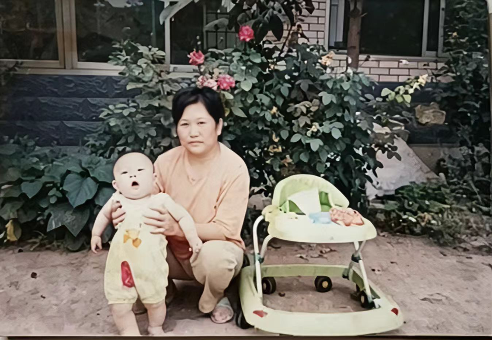
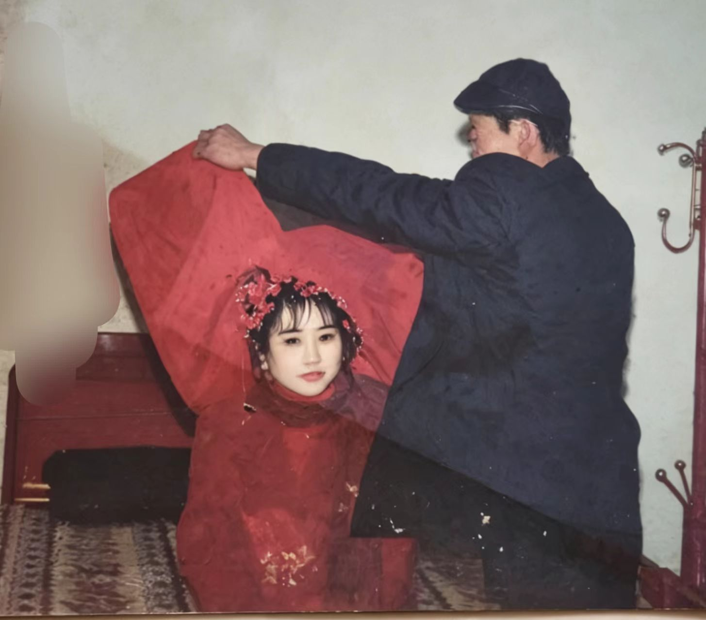

Mother's Day · 2026.05.10
亲爱的
妈妈
萱草生堂阶，游子行天涯。
爱你的儿子
Mother's Day · 2026.05.10
萱草生堂阶，游子行天涯。
Chapter 01 · 小时候

岁月花开
心里有光Chapter 02 · 记忆
Chapter 03 · 上学
Chapter 04 · 长大
Chapter 05 · 离家
Chapter 06 · 懂得
Chapter 07 · 祝愿
Chapter 08 · 高潮
For My Dear Mom